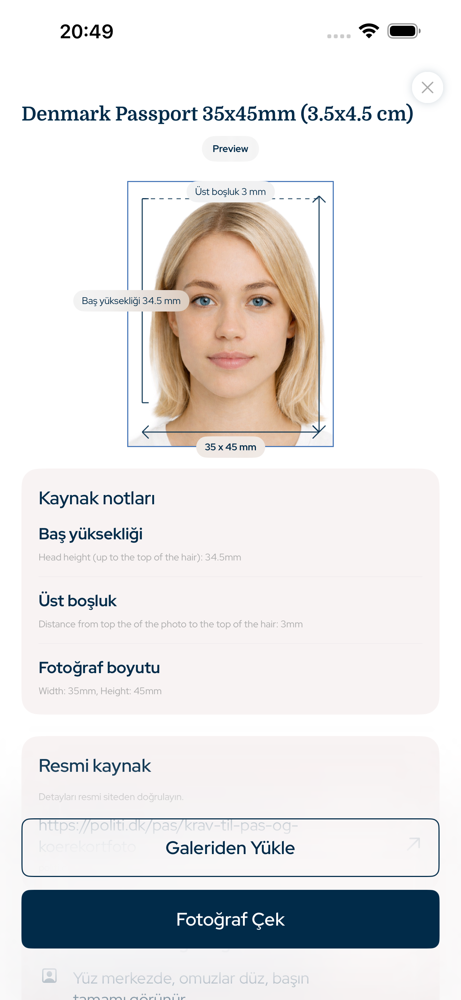

Türkiye · biyometrik fotoğraf uygulaması, pasaport fotoğrafı, vize fotoğrafı, kimlik fotoğrafı, ehliyet fotoğrafı
Pasaport, vize ve kimlik fotoğrafları için doğru ölçü
Bu iPhone uygulaması pasaport fotoğrafı, vize fotoğrafı, kimlik fotoğrafı ve ehliyet fotoğrafını doğru fotoğraf boyutu, baş oranı, üst boşluk, arka plan ve çıktı ayarlarıyla hazırlar.
- Yüz
- AI değişikliği yok
- Kırpma
- Baş + üst boşluk
- Çıktı
- Dijital + baskı

Üst boşluk
hassas
Baş oranı
kılavuzlu
Aranabilir gereksinimler
Resmi fotoğraf geometrisi esas alınarak tasarlandı
Uygulama ölçülebilir belge fotoğrafı kurallarına odaklanır: fotoğraf boyutu, piksel çıktısı, baş yüksekliği, yüz konumu, üst boşluk, arka plan ve baskı düzeni.
Baş oranı ve üst boşluk kontrolü
Yüz hatlarında AI değişikliği yok
Dijital dosya ve baskı sayfası
Türkiye document types
Bu uygulamanın hazırlayabileceği fotoğraflar
Biyometrik Fotoğraf Uygulaması, dijital dosya veya baskıya hazır sayfa isteyen iPhone kullanıcıları için yaygın resmi fotoğraf süreçlerini kapsar.
Pasaport fotoğrafı
Vize fotoğrafı
Kimlik fotoğrafı
Ehliyet fotoğrafı
Baskı sayfası
Fotoğraf bütünlüğü
AI ile yüz değişikliği yok
İş akışı kasıtlı olarak pratiktir: görüntüyü kırp, başı hizala, yüzü koru, arka planı hazırla, ardından doğru boyutu dışa aktar. Bu, güzellik retüşü için değil, resmi belge fotoğrafı hazırlama içindir.
1Ülke ve belge türünü seçin
2Baş ve üst boşluğu hizalayın
3Dijital dosya veya baskı sayfası olarak dışa aktarın
Sorular
SSS
Uygulama yüzümü AI ile değiştirir mi?
Hayır. Yüz hatlarını değiştirmez; ölçü, kırpma, arka plan ve dışa aktarma üzerine çalışır.
Biyometrik fotoğraf hazırlayabilir miyim?
Evet. Ülke ve belge türünü seçerek ölçü, baş oranı ve üst boşluğa göre çıktı alabilirsiniz.
Baskı için kullanabilir miyim?
Evet. Dijital dosya veya baskıya hazır sayfa olarak dışa aktarabilirsiniz.
Biyometrik Fotoğraf Uygulaması
iPhone ile pasaport, vize, kimlik ve ehliyet fotoğrafı hazırlayın; fotoğraf boyutu, baş oranı, üst boşluk ve baskı çıktısı doğru ayarlanır.
App Store'dan indir